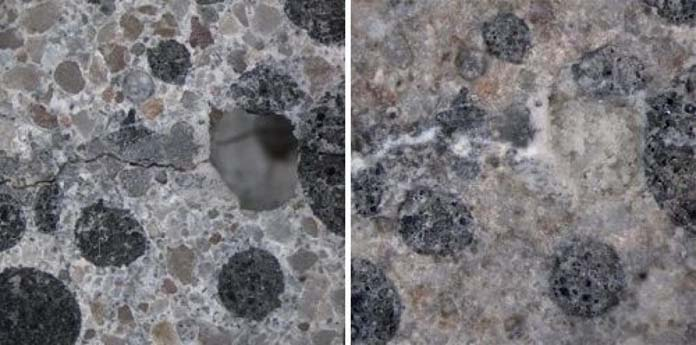

Telhado Verde
Trata-se de uma manta impermeabilizada de PVC com uma camada vegetal feita para cobrir telhas comuns. As plantas refletem os raios solares com mais eficácia e oferecem melhor isolamento térmico para a edificação, sendo ideal para locais muito quentes e abafados, como na cidade grande.

Bioconcreto
rata-se do concreto comum contendo uma bactéria chamada bacillus psdeudofirmus que é capaz de regenerar a estrutura em caso de desgastes e rachaduras, evitando assim reformas mais complicadas. Elas produzem um tipo de calcário quando entram em contato com água e oxigênio, preenchendo as fissuras aos poucos.

Containers
Uma forma alternativa de construção de casas é utilizar containers reciclados e economizar muito com materiais de construção.

Painéis de Aquecimento Solar
Trata-se de uma manta impermeabilizada de PVC com uma camada vegetal feita para cobrir telhas comuns. As plantas refletem os raios solares com mais eficácia e oferecem melhor isolamento térmico para a edificação, sendo ideal para locais muito quentes e abafados, como na cidade grande.

Captadores da Água da Chuva
A arquitetura verde também pode inserir captadores da água da chuva para reuso no dia a dia, como lavar calçadas, carros, direcionar para o vaso sanitário, dentre outros